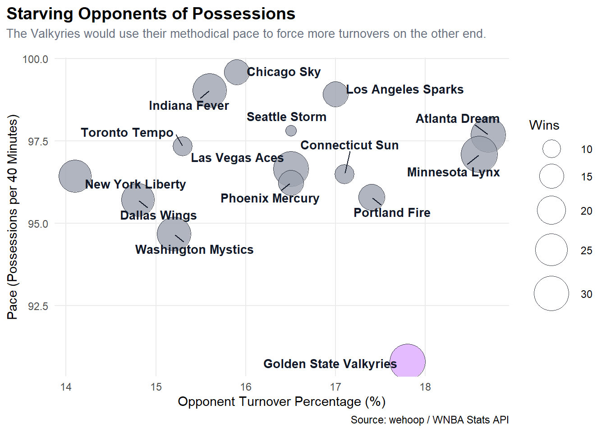

The Golden State Valkyries are 2026 WNBA Champions; Here’s how they did it…
Project 1
Project 2
Author
Colin Dalvand
Published
November 13, 2026
The 2026 Golden State Valkyries are one of the biggest anomalies in WNBA history.
They won their first-ever championship on October 31st, 2026, beating the Atlanta Dream in seven games, thanks largely to a 30-point (WNBA postseason-record 28 in one half), 4-block performance from Gabby Williams in the 68–63 Game 7 clincher to win Finals MVP.
Well, why is this so impressive? It’s just another WNBA Championship. Not for the violet team hailing from Ballhalla.
The Valkyries entered their second-ever season in franchise history in 2026 with aspirations of making a deeper run in the playoffs than in 2025, when they became the first expansion team to reach the playoffs in year one.
Finishing as the second-best team in the league was a great start, but how did they get there?
Their offense wasn’t anything special, or even really good in 2026, ranking seventh out of 15 teams in offensive rating.
Only three of the 16 players that appeared in games averaged double figures: Gabby Williams, Janelle Salaün, and Veronica Burton. Their leader in points, Gabby Williams, still only averaged 14.4 points per game in 2026.
Well, maybe they just shared the rock at an elite rate! If you thought yes, you might want to rethink that. The Valks were fifth in the WNBA in assist percentage, which is the percentage of a teammate’s made field goals a player assisted on while they were on the court.
Their leader (and ninth in the entire W) in assists per game at 5.7, Veronica Burton, had more than double their next-best player, Tiffany Hayes, who averaged 2.5.
Okay, so the Valkyries’ offense was alright, at best.
What’s that old saying about championships? “Steals win championships.” No, hold on, that doesn’t sound right.
Let’s head back to the graphs to see what actually wins championships.
The Valks sat at 99.1, with the second-ranked Washington Mystics at 103.3. They played timely defense and made stops when necessary. It took pressure off a mediocre offense that struggled to find its best form all season long.
Gabby Williams, who finished second in Defensive Player of the Year voting, and Kiah Stokes, fourth in the WNBA in blocks per game (1.7), paved the way for GSV.
Where do the 2026 Valkyries rank among all-time teams, though?
In the 44-game era, this team is third, with the 2025 Valkyries right behind them at 99.8. The two better teams are 2025 Atlanta Dream (98.9) and 2025 Minnesota Lynx (97.5).
A quick footnote about that ‘25 Dream team: that’s quite impressive when you don’t exactly have a “best defender.”
The ‘26 Valkyries took a page out of that Atlanta Dream book, replicating a defense that didn’t have one true superstar.
Shifting back to the offense for a minute, here’s an argument to consider: did they actually help more than their seventh-best offensive rating suggested?
Let’s take a look at how their pace wore teams down:
Code
to_data <-tibble(team_name =c("Atlanta Dream", "Chicago Sky", "Connecticut Sun", "Dallas Wings", "Golden State Valkyries", "Indiana Fever", "Las Vegas Aces", "Los Angeles Sparks", "Minnesota Lynx", "New York Liberty", "Phoenix Mercury", "Portland Fire", "Seattle Storm", "Toronto Tempo", "Washington Mystics"),def_rating =c(103.5, 108.5, 109.2, 106.4, 99.1, 108.3, 105.9, 110.3, 103.5, 106.9, 108.9, 112.4, 108.6, 116, 103.3),off_rating =c(111.9, 104.1, 97.8, 111.3, 108.2, 115, 112.9, 105.4, 112.1, 110.8, 104.9, 106.5, 100.7, 105.3, 104.6),wins =c(30, 16, 11, 27, 32, 28, 31, 16, 33, 26, 16, 17, 8, 11, 28),opp_tov_pct_per_poss =c(18.7, 15.9, 17.1, 14.8, 17.8, 15.6, 16.5, 17.0, 18.6, 14.1, 16.5, 17.4, 16.5, 15.3, 15.2),pace =c(97.67, 99.58, 96.49, 95.7, 90.79, 99.03, 96.65, 98.92, 97.08, 96.43, 96.22, 95.78, 97.81, 97.33, 94.66) )chart3_data <- to_data |>mutate(team_name =reorder(team_name, opp_tov_pct_per_poss),valkyries = team_name =="Golden State Valkyries" )ggplot(chart3_data, aes(x = opp_tov_pct_per_poss, y = pace, size = wins, fill = valkyries)) +geom_point(shape =21, color ="#111827",alpha =0.8) +scale_fill_manual(values =c("FALSE"="#9ca3af", "TRUE"="#DFAAFF"),guide ="none" ) +scale_size_continuous(range =c(4, 14),name ="Wins") +geom_text_repel(aes(label = team_name),size =3.5,fontface ="bold",color ="#111827",box.padding =0.5,show.legend =FALSE ) +labs(title ="Starving Opponents of Possessions",subtitle ="The Valkyries would use their methodical pace to force more turnovers on the other end.",x ="Opponent Turnover Percentage (%)",y ="Pace (Possessions per 40 Minutes)",caption ="Source: wehoop / WNBA Stats API" ) +theme_minimal(base_family ="sans") +theme(plot.title =element_markdown(size =14, margin =margin(b =5), face ="bold"),plot.subtitle =element_text(size =10, color ="#6b7280", margin =margin(b =15)),panel.grid.minor =element_blank(),legend.position ="right",plot.title.position ="plot" )

By slowing things down on the offensive end, the Valkyries would tire out their opponents before they would take possession back down the other side of the court.
Taking a look back, this 2026 GSV team had the slowest pace since 2015, when the WNBA was an all-around much slower league. In the 2015 season, four teams ranked below 90 in pace. Since that season, there hasn’t been a team that has ranked below 90, with the 2026 Valkyries coming closest at 90.79.
The second part of this graph shows how the Valks used their methodical offense to suffocate their opponents into turnovers, ranking third in opponent turnover percentage.
So was their offense actually the catalyst for their defense? You could make the argument, but my final answer is that their defense was just too good for teams to play past.